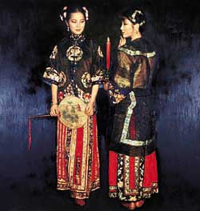
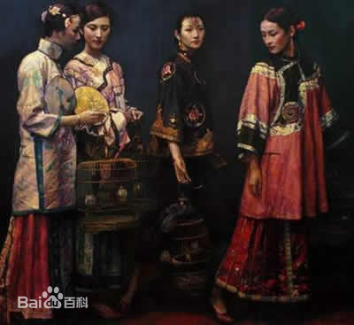
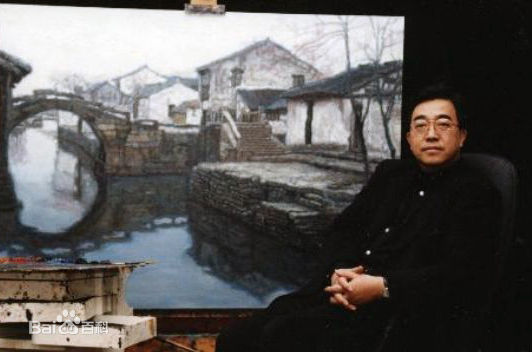

陈逸飞画家作品展
|  |  |  |
陈逸飞 (1946.4.14-2005.4.10）生于宁波。著名油画家，文化实业家，导演。1965年毕业于上海市美术专科学校（现上海大学上海美术学院），进入上海油画雕塑创作室（现上海油画雕塑院），曾任油画组负责人。1980年旅美后，专注于中国题材油画的研究与创作。陈逸飞以“大美术”的理念，在电影、服饰、环境设计等诸多方面都取得了创造性成就，成为文化名流。是闻名海内外的华人艺术家。
60—70年代创作了《黄河颂》、《占领总统府》、《踱步》和《周庄》等知名的优秀油画作品。